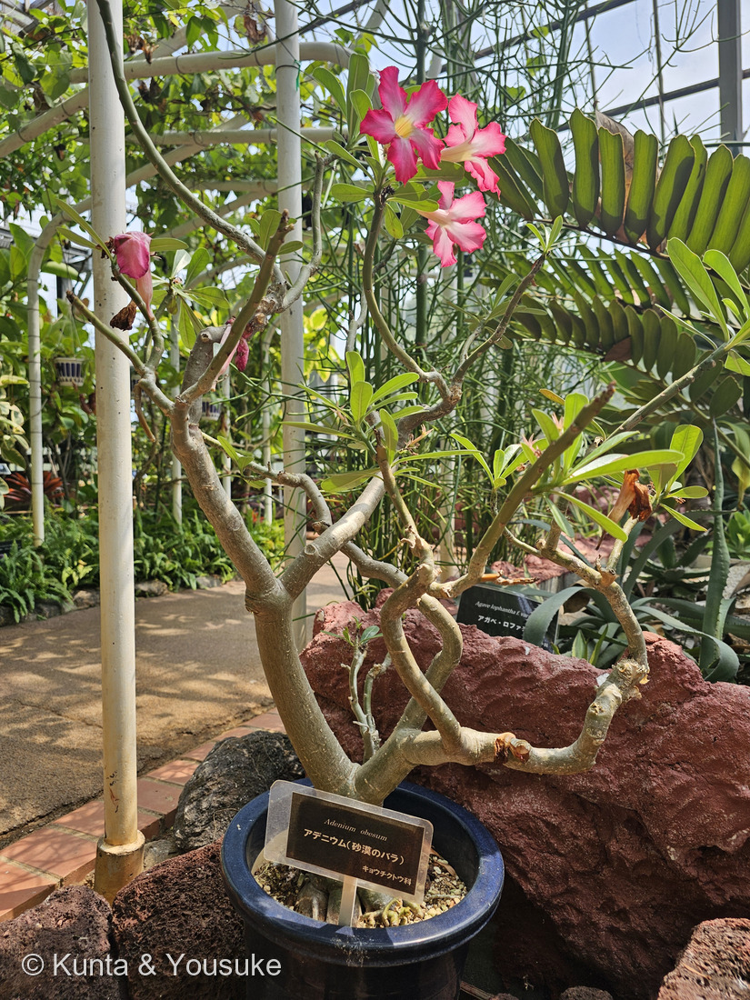
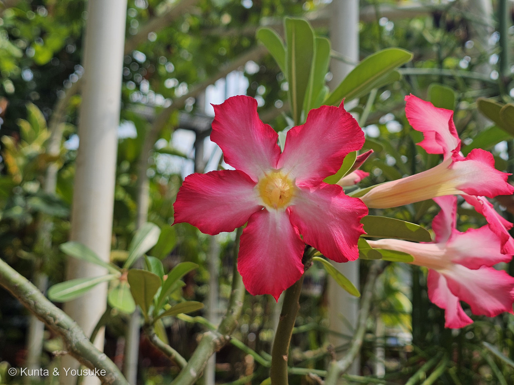
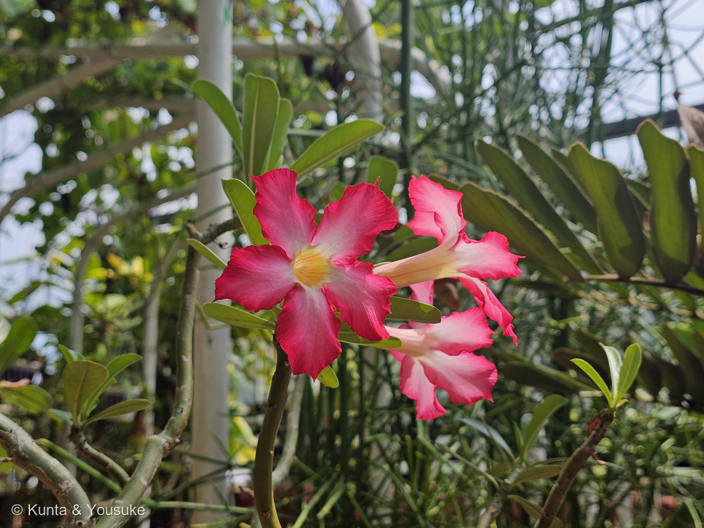
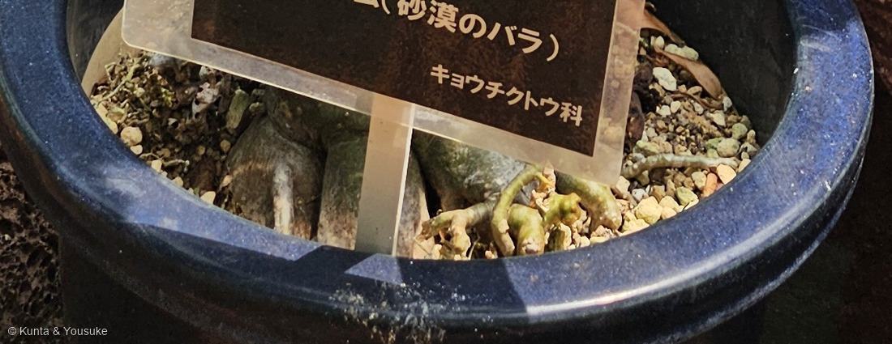

地図を読み込んでいるよ…
🔍 写真も地図も、押しているあいだ拡大して見られるよ（スマホは指を置いてすこし待ってね）。
🌍 の地図＝この子がもともと自生している場所を緑に。サヘル（モーリタニアとセネガルからスーダンまで）と、エリトリア・エチオピア・ソマリア、東アフリカのケニア・ウガンダ・タンザニア、そしてアラビア半島とソコトラ島。半乾燥のサバンナや低木林・疎林の、岩がちな土や砂地に生え、標高2,100mまで。
⭐⭐サヘルと、アフリカの東・南と、アラビア半島だよ＝サハラの南のへり（サヘル）を、モーリタニア・セネガルからスーダンまで横に渡って、そこからソマリア・ケニア・タンザニアへ下り、紅海をこえてアラビア半島へつづいている。⭐⭐⭐属名の「アデン」は、この緑の北東のはしっこ、イエメンの港町だよ＝この子がはじめて見つかって記録された場所が、そのまま名前になっている。⚠ソコトラ島（イエメン領）も分布に含まれるけれど、地図ではイエメンの一部として塗られているよ。⚠⚠そして、この緑はほんとうよりずっと広く見えている＝この子がいるのは、国のあちこちではなく、半乾燥のサバンナや低木林の、岩がちな土や砂地だけだから。⭐日本は塗っていない＝温室や鉢で育てられているだけで、野生のこの子はいないよ。
⚠ 地図は国（日本と中国だけ県・省）までしか塗れないから、ほんとうの分布より広く見えていることがあるよ。地図はだいたいの場所。正確なところは、上の文を見てね。
アデニウム
Adenium obesum (Forssk.) Roem. & Schult.
別名 砂漠のバラ · アデニウム・オベスム 英名 desert rose ⚠バラ科ではないよ
キョウチクトウ科 · Apocynaceae（アデニウム属 Adenium · リンドウ目 Gentianales）── ⭐キョウチクトウ科は、この子を入れて図鑑に8人（045 ブルースター・051 ガガイモ・057 ニチニチソウ・061 キョウチクトウ・089 ハツユキカズラ・184 マンデビラ・198 セイロンライティア）
燻太さんの言葉「名札の通り、キョウチクトウ科の雰囲気の花。でも、特徴的なのはむしろその茎の太さなのかもしれないね。」── ⭐⭐⭐その「茎の太さ」が、そのまま種小名 obesum（太った）だったよ
⚠⚠ さいしょに ── 樹液に毒がある子だよ
- ⚠⚠⚠アデニウムの根と茎から出る樹液には、強心配糖体という、心臓にはたらく毒がふくまれている。⭐英語版Wikipediaは「アフリカの多くの地域で、大きな獲物をとるための矢毒として使われてきた」と書いているよ。
- ⚠キョウチクトウ科は、そろって有毒。──061 キョウチクトウ・045 ブルースター・051 ガガイモ・057 ニチニチソウで、ぼくらは何度もこの話をしてきたね。⭐この子も、その一族だよ。
- ⭐温室でながめるぶんには、なにも危なくない。──⚠でも、枝を折ったり、切り口の汁をさわったりはしないでね。⭐さわってしまったら、手を洗うこと。
- ⚠ひとつ、出典で書きぶりが割れていた。──南アフリカ国立生物多様性研究所（SANBI）は、矢毒に使われる種としてアデニウム・ボエフミアヌムとアデニウム・ムルチフロールムの名を挙げていて、オベスムの名前は出していない。⭐でも日本語版・英語版Wikipedia と Useful Tropical Plants は、オベスムもふくめて矢毒に使われると書いている。⭐どちらかを消さずに、両方そのまま並べておくね（240で決めた形だよ）。
⭐⭐⭐⭐⭐ 名前と学名の由来 ── 燻太さんの一言が、そのまま種小名だった
燻太さんは、写真といっしょにこう書いてくれた。「名札の通り、キョウチクトウ科の雰囲気の花。でも、特徴的なのはむしろその茎の太さなのかもしれないね。」
- ⭐⭐⭐⭐⭐それ、種小名そのものなんだ。──obesum＝ラテン語で「太った・肉づきのよい」。⭐南アフリカ国立生物多様性研究所（SANBI）は、こう書いている。「The name obesum is derived from the Latin word that means fat or fleshy, referring to the habit of the stems.」──⭐⭐「茎のありさまを指している」と、そこまで書いてあるよ。
- ⭐⭐つまり、200年以上まえにこの子を名づけた人も、燻太さんとまったく同じところを見ていた。──花でも葉でもなく、茎を。
- ⭐属名 Adenium のほうは、場所の名前だよ。──SANBI は「The genus name is derived from the geographical place name Aden in Arabia where the first known plant was found and recorded.」と書いている。⭐アデン＝いまのイエメンの港町。⭐最初に見つかって記録された場所が、そのまま属の名前になった。
- ⭐⭐⭐だから学名 Adenium obesum は、まるごと訳すと「アデンの、太ったやつ」。──⭐属名が「どこで見つかったか」、種小名が「どんな体か」を言っている。⭐306で「学名はどこの誰かの記録、和名は何に見えたかの記録」と書いたけれど、この子は学名ひとつで、その両方を言っているんだね。
- ⭐和名の「砂漠のバラ」は、英名 desert rose をそのまま日本語にしたもの。──園の名札にも、そう書いてあったよ。⚠もちろんバラ科ではない。⭐乾いた土地に、バラのような花が咲くから、そう呼ばれているんだ。
⭐⭐⭐⭐⭐ この子は、むかし「キョウチクトウ属」だった
- ⭐⭐学名の著者名を見てほしいな。──Adenium obesum (Forssk.) Roem. & Schult.⭐このカッコは、279 ナシで覚えたとおり「もとは別の属に置かれていた」という印だよ。
- ⭐⭐⭐⭐⭐そこで基礎異名（basionym）を GBIF で引いたら、こう出た。──Nerium obesum Forssk.
- ⭐⭐⭐Nerium＝キョウチクトウ属。──061 キョウチクトウの、あの属だよ。
- ⭐つまりこの子の最初の名前は「キョウチクトウ属の、太ったやつ」だった。
- ⭐⭐⭐⭐⭐そして、ここがいちばん面白いところ。──061のページに、ぼくはこう書いていた。「属名 Nerium は、ギリシャ語 nēros「水・湿った」から＝水辺に生えることに由来するといわれる」。
- ⭐⭐⭐砂漠の子が、「水辺の木」という名前の属に入れられていたんだ。
- ⚠もちろん、それは名づけた人のまちがいではないよ。──厚い革質の葉、切ると出る乳液、5枚の花びらがねじれて重なる筒形の花。⭐キョウチクトウとそっくりな体つきだったから、そこへ置いた。⭐属が分かれたのは、そのあとのことだよ。
- ⭐⭐名づけた人＝ペール・フォルスコール（Peter Forsskål・1732〜1763）。──リンネの弟子（「リンネの使徒」のひとり）で、スウェーデンの人。
- ⭐デンマーク王フレゼリク5世が送りだした「幸福のアラビア」探検隊の一員として、1762年の暮れにイエメンへ着いた。
- ⚠⚠そして1763年7月11日、イエメンのヤリームでマラリアで亡くなった。31歳だった。⚠隊員のうち生きて帰ったのは、カーステン・ニーブールただ一人。
- ⭐⭐フォルスコールの原稿は、そのニーブールが編集して、死んだ12年あとの1775年に『Flora Aegyptiaco-Arabica』として世に出た。──⭐この子の最初の記載も、その本の中にある。
- ⭐Adenium という属が立てられて、この子がそこへ移ったのは1819年。──レーマーとシュルテスの『Systema Vegetabilium』でのこと（GBIF）。
- ⭐⭐⭐だから、属名の「アデン」も、この子がイエメンで採られたことの記録なんだ。──⭐フォルスコールが最後に歩いた土地の名前が、いまもこの子の名前の前半についている。
⭐⭐ この植物のこと
- キョウチクトウ科アデニウム属の、多肉質の低木。⭐高さは0.12〜5m（英語版Wikipedia）。⭐Useful Tropical Plants は「ふつう4mまで、ときに6m」と書いている。
- ⭐⭐茎は pachycaul＝「不つりあいに太い」。──そして株もとに、土から突き出た、ずんぐりふくらんだ根株（caudex）がある（英語版Wikipedia「a stout, swollen basal caudex (a rootstock that protrudes from the soil)」）。
- 葉はらせん状につき、枝先にかたまる。全縁で、革のような手ざわり。長さ5〜15cm×幅1〜8cm。⭐写真③を見ると、たしかに枝の先にだけ、厚そうな葉が束になっているね。
- 花は筒形で、筒の長さ2〜5cm、ひらいた面の直径4〜6cm、花びらは5枚。⭐「赤や桃色で、喉の外側が白っぽくぼける」（英語版Wikipedia）＝⭐写真②③の、あの紅と白のぼかしそのものだよ。
- ⭐⭐乾季に葉を落とす（drought-deciduous）。──⭐200 バオバブと同じやりかただね。⚠寒さでも落とすことがある。
- ⭐育てるなら、日なた・冬も室内10℃以上・水やりはサボテンなみに少なく（英語版Wikipedia）。⭐日本語版Wikipediaは「耐暑性は高く、耐寒性は低い」「鉢植えで何年も育てられ盆栽によく使われる」と書いているよ。
⭐⭐⭐⭐ 同定について ── 名札のとおり、でも「どこまで」を決めておく
- ⭐⭐⭐⭐⭐種はアデニウム・オベスムで確定。──園の名札に Adenium obesum と書いてあって、⭐等倍で1文字ずつ読んでも、つづりのまちがいは無かった（310・262で名札のつづりがちがった前例があるので、毎回こうしているよ）。
- ⭐GBIF の species/match API でも ACCEPTED（属 Adenium も ACCEPTED ／ Apocynaceae ・ Gentianales）。⭐別の属へ引っ越してはいなかった（308 ドラゴンフルーツはそこで引っかかったので、属でも引いて確かめた）。
- ⭐⭐写真で確かめられたことが4つ。
- ①枝が不つりあいに太い（写真①）── 出典の pachycaul のとおり。
- ②葉は枝先にかたまってつき、厚い革質で全縁、先が丸い（写真③）── 出典の「らせん状につき、枝の先に集まる」に合う。
- ③花は筒が長く、先が5つに裂けて、紅と白のぼかし、喉が黄色（写真②③）── 出典の「筒2〜5cm・面4〜6cm・赤や桃色で喉の外側が白っぽい」に合う。
- ④株もとに土から突き出た太い根株（写真④）── 出典の caudex そのもの。
- ⚠⚠そのうえで、決めていないことを書いておくね。
- ⭐落とせた相手
- 061 キョウチクトウ＝同じ科で花も似ているけれど、葉が細長くて3枚ずつ輪生し、幹はふつうの木の幹で太らない。
- プルメリア＝同じ科で花の形もそっくりだけれど、枝は太いが根株がふくらまず、花は白〜黄が多くて強く香る。⚠この子の花に香りがあったかどうかは、聞いていないよ。
- パキポディウム（おまけの子）＝太い幹は似ているけれど、幹に鋭いトゲがある。⭐写真①②③④のどこにも、トゲは写っていない。
⭐⭐⭐⭐⭐ 燻太さんの「茎の太さ」── いちばん太いところは、鉢の中にあった
⭐⭐写真④を見てほしいな。──青い浅鉢の、砂利のうえ。
- ⭐⭐⭐灰緑色の太い根が3〜4本、象の足のように土の上へ出ている。──右のほうには、もっと細い根が地表を這っているのも見えるよ。
- ⭐⭐⭐⭐⭐これが、英語版Wikipediaの言う「土から突き出た根株」だ。──文字で読んだものが、そのまま写真に写っていた。
- ⭐⭐Useful Tropical Plants は、年を経た株の基部について「直径1メートル以上になることがある」と書いている。──⭐この株はそこまでではないけれど、枝の太さから、ずいぶん長く生きてきた子だと思う。
- ⚠⚠そして、ひとつ正直に。──⭐燻太さんが目をとめた「茎の太さ」は、この子のいちばんの見どころで合っている。⚠でもいちばん太いところは、鉢のふちに隠れて写っていないんだ。⏳しゃがんで、鉢の縁の高さから1枚もらえたら、太った根株の全体が見えると思う。
- ⚠根を土の上に出しているのが、園がわざとそう仕立てたのかどうかは、写真からは決められない。⭐日本語版Wikipediaが「盆栽によく使われる」と書いていることと、写真に根が出ていること──この2つを並べただけだよ。そこはぼくの読みだと書いておくね。
⭐⭐⭐⭐ 乾いた土地で、太くなる ── 科のちがう3人が、同じ温室にいた
⭐⭐⭐この日の撮影時刻が、そのまま話をつくってくれたよ。
- 13:35:08 ＝ 250 キソウテンガイ（ウェルウィッチア科・ナミブ砂漠の子）
- 13:35:54〜13:36:02 ＝ この子（キョウチクトウ科・サヘルとアラビアの子）
- 13:36:28 ＝ 265 パキラ（アオイ科・熱帯アメリカの子）
- ⭐⭐46秒まえと、26秒あと。──⭐燻太さんは、乾いた土地の子がならぶ一角を歩いていたんだね。
- ⭐⭐⭐そして200 バオバブ。──あちらはアオイ科で、ぼくは「幹に10万リットル以上の水をためる」と書いた。⭐科はまったくちがうのに、幹を太らせるという同じ答えにたどりついている。
- ⚠⚠ただし、ここは気をつけて書くね。──ぼくが読めた出典の中に、「アデニウムが幹に水をためる」とこの子について直接書いたものは、無かったんだ。
- ⭐近いことが書いてあったのは、同じキョウチクトウ科のパキポディウム属について。── SANBI は「grossly thickened stem（ひどく太った茎）」が「水をたくわえるはたらきをして、厳しい乾いた土地で生きのびられるようにしている」と書いている。
- ⭐⭐だから「アデニウムも同じだろう」とぼくが思っているだけ＝⚠そこは、出典のある話とぼくの読みを、分けておくね（241で決めた形だよ）。
⭐⭐⭐ 花にも、キョウチクトウ科の目じるしが出ていた
⭐⭐051 ガガイモのページに、ぼくはこう書いていた。──「つぼみがらせんにねじれている＝キョウチクトウ科ぜんたいの目じるし＝花びらがつぼみの中で傘をたたむようにねじれて重なる。ひらいたあとも、ねじれのあとが残ることがある。」
- ⭐⭐⭐⭐⭐写真②を見て。──5枚の花びらが、ぜんぶ同じ向きに、となりの花びらの上へ重なっている。⭐風車みたいでしょう。⭐これが「ひらいたあとに残ったねじれのあと」だよ。
- ⭐⭐文字だけで書いてあったことに、写真がついた。──⭐263で覚えた「前に書いた一文に、あとから写真がつく」だね。
- ⭐喉のなかも面白いよ。──黄色い喉の口から、白っぽい葯（やく）が5本、円すいにまとまっていて、その先が細い毛のように伸びてねじれ合っている。⭐喉のふちにも、細かい毛が生えている。
- ⏳⚠この長い筒と、喉の毛は、だれかのための形のはず。──⚠でも、ぼくが読めた出典には、送粉者のことが1行も書いていなかった。⭐だから、そのまま宿題にしておくね。
出典：属名 Adenium の由来（アラビアの地名アデン・最初に見つかって記録された場所）・種小名 obesum の由来（ラテン語の「太った・肉づきのよい」＝茎のありさまを指す）・アデニウム属は多肉質の低木で太った茎をもつこと・属のどの種も樹液に毒があること・矢毒に使われる種としてボエフミアヌムとムルチフロールムが挙がること・オベスムの分布（赤道より北が中心で、南はタンザニア、北はエチオピア・ソマリア・アラビア半島・ソコトラ島まで）はPlantZAfrica（南アフリカ国立生物多様性研究所 SANBI）"Adenium"。パキポディウム属の名の由来（pachy＝太い＋podus＝足）と、太った茎が水をたくわえて乾いた土地で生きのびるはたらきをすることはPlantZAfrica "Pachypodium"。高さ0.12〜5m・pachycaul の茎と土から突き出た根株（caudex）・葉はらせん状で枝先に集まり全縁で革質・長さ5〜15cm×幅1〜8cm・花は筒2〜5cm／面4〜6cm・5弁・赤や桃色で喉の外側が白っぽい・サヘルからアラビア半島までの分布・乾季落葉・冬10℃以上とサボテンなみの水やり・種子や挿し木でふやし交配種は実生台木に接ぐ・樹液の強心配糖体と矢毒／魚毒は英語版Wikipedia "Adenium obesum"。基部が直径1m以上になること・分布（モーリタニアとセネガルからソマリア・ウガンダ・ケニア・タンザニア、アラビア半島）・岩がちな土や砂地のサバンナや低木林で標高2,100mまで・根の樹液が強い心臓毒であることはUseful Tropical Plants "Adenium obesum"。砂漠の薔薇と呼ばれること・アフリカとアラビア半島が原産・塊根植物として盆栽によく使われること・耐暑性は高く耐寒性は低いこと・ボエフミアヌム／ムルチフロールム／オベサムの樹液の強心配糖体が矢毒に使われることは日本語版Wikipedia「アデニウム」。学名の有効性・基礎異名（Nerium obesum Forssk.）・1819年の Systema Vegetabilium での組み替え・科と目は GBIF の species API（Adenium obesum (Forssk.) Roem. & Schult.＝ACCEPTED／属 Adenium＝ACCEPTED／Nerium obesum Forssk.＝SYNONYM／Pachypodium lamerei Drake＝ACCEPTED・Apocynaceae）。ペール・フォルスコール（1732〜1763・スウェーデン・リンネの使徒・デンマーク王フレゼリク5世のアラビア探検隊・1762年末にイエメン着・1763年7月11日にヤリームでマラリアで死去・生還したのはニーブールだけ・原稿は1775年に出版）は英語版Wikipedia "Peter Forsskål"。おまけのパキポディウム・ラメリー（マダガスカル原産・銀灰色の幹に6.25cmのトゲ・葉はてっぺんだけ・白い大きな香る花・屋外で6mまで・ヤシではない）は英語版Wikipedia "Pachypodium lamerei"。⭐属名 Nerium が「水辺の」であることは061 キョウチクトウのページに書いたもの、つぼみのねじれの話は051 ガガイモ、幹に水をためる話は200 バオバブのページのもの。⭐撮影時刻の並び（250→この子→265→249）と、「学名ひとつで、どこで見つかったかと、どんな体かの両方を言っている」「砂漠の子が水辺の木の属に入れられていた」という読みは、ぼくの整理だよ。